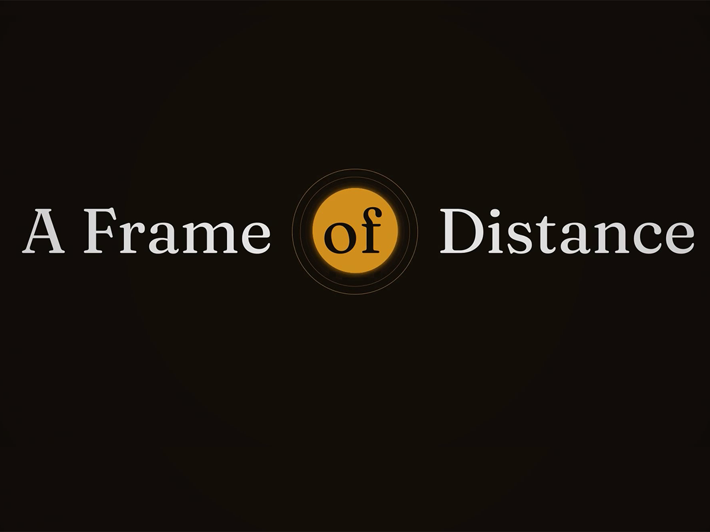
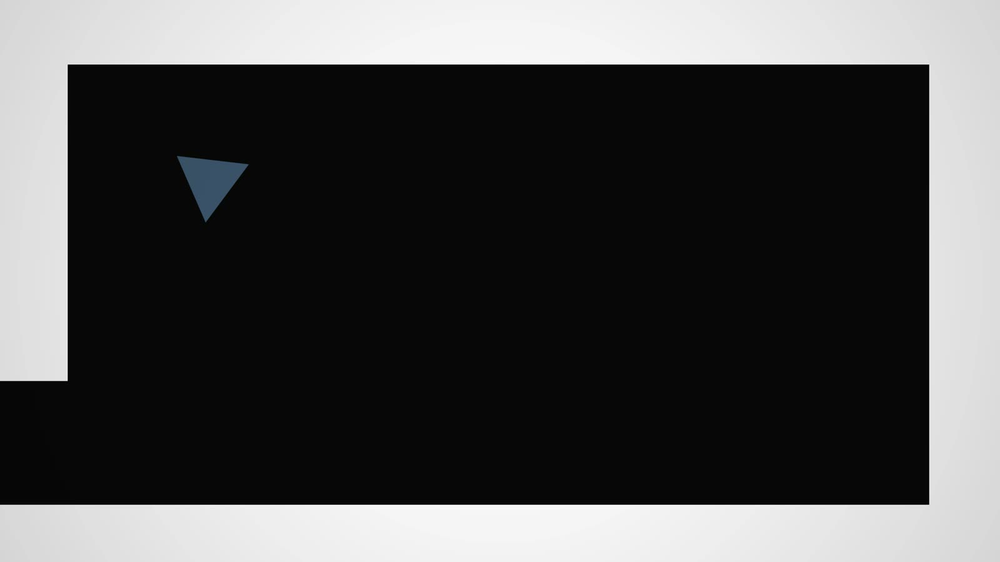
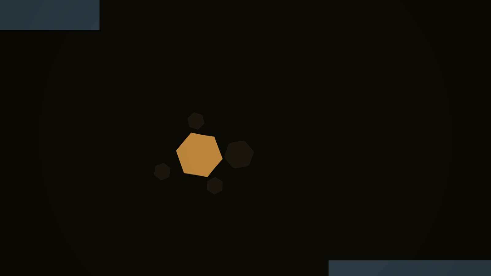
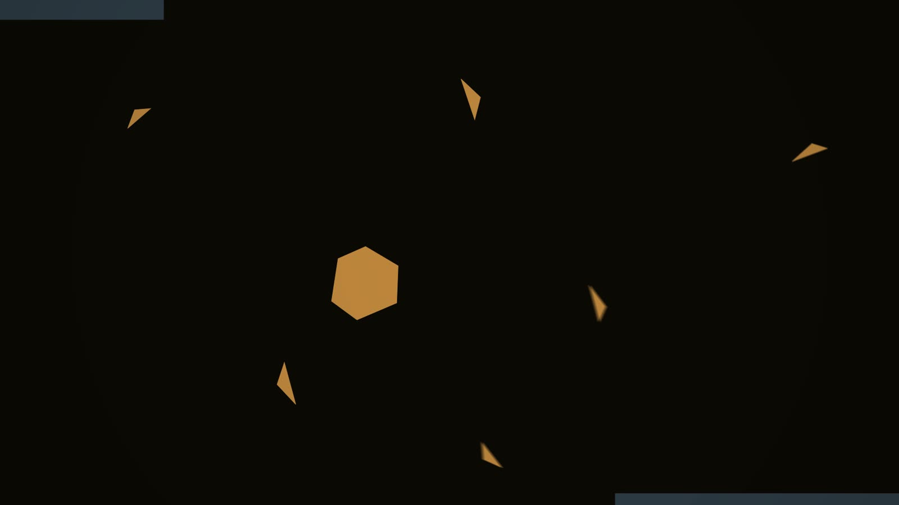
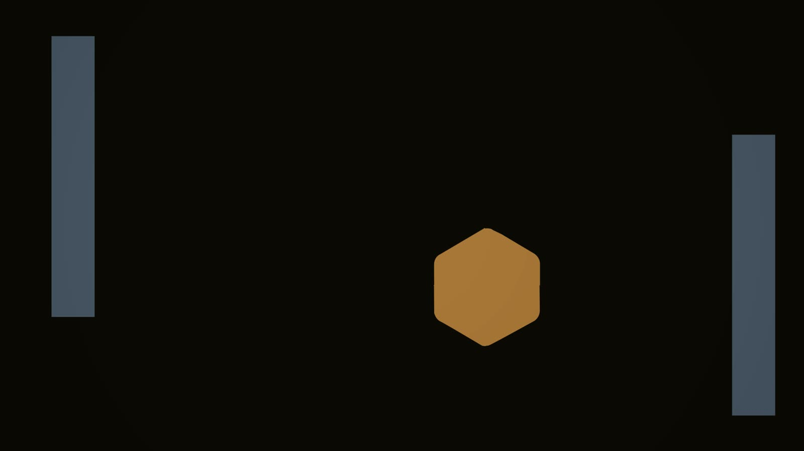
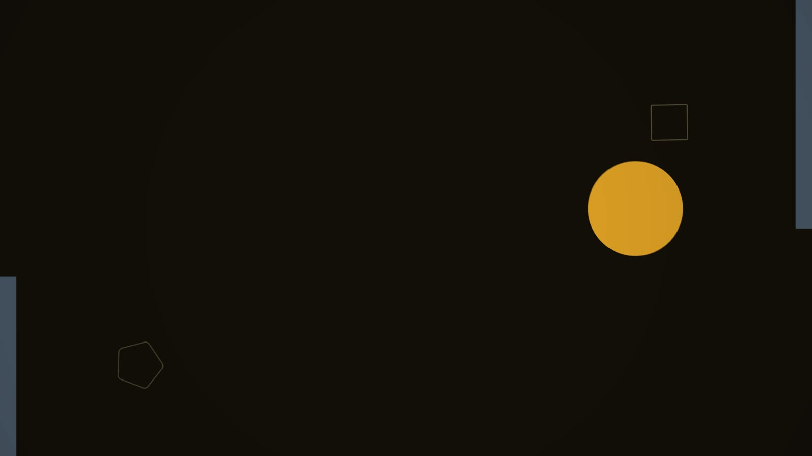
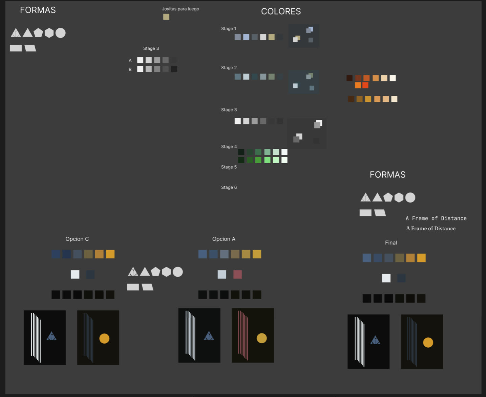
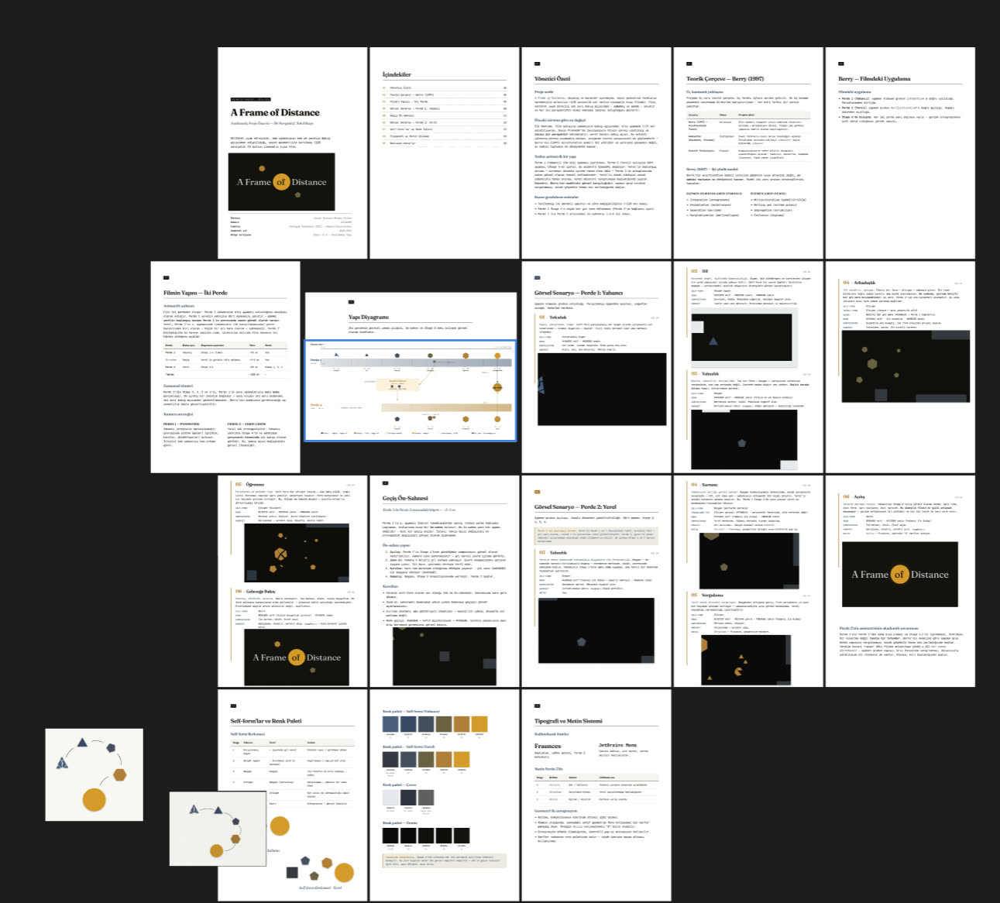

Berry's acculturation model as a 2½-minute animated short. No dialogue, no characters, no narration. Only shape, color and motion.

The work
Turn Berry's acculturation model into a 2½-minute animated short. The model describes how a newcomer and a host society change each other. The film had no dialogue, characters or narration, so everything had to come through shape, color and motion.
A three-member jury gave it 100/100. Writing the visual dictionary before production is what made it work. I had to translate an abstract theory into motion rules that a viewer could read without any explanation. I also learned to treat timing as part of the meaning: a hold, an ease or a cut can show isolation or arrival as clearly as a line of dialogue.
Stills





Process
The visual dictionary came first. Shapes, palettes and motion rules were written down for every stage before a single frame was animated.

